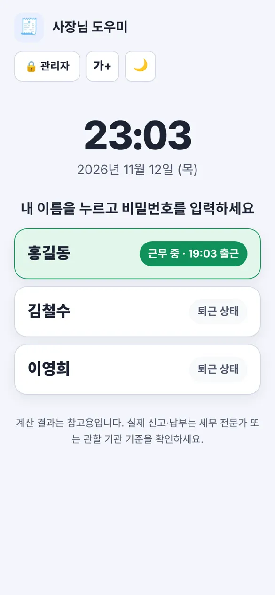
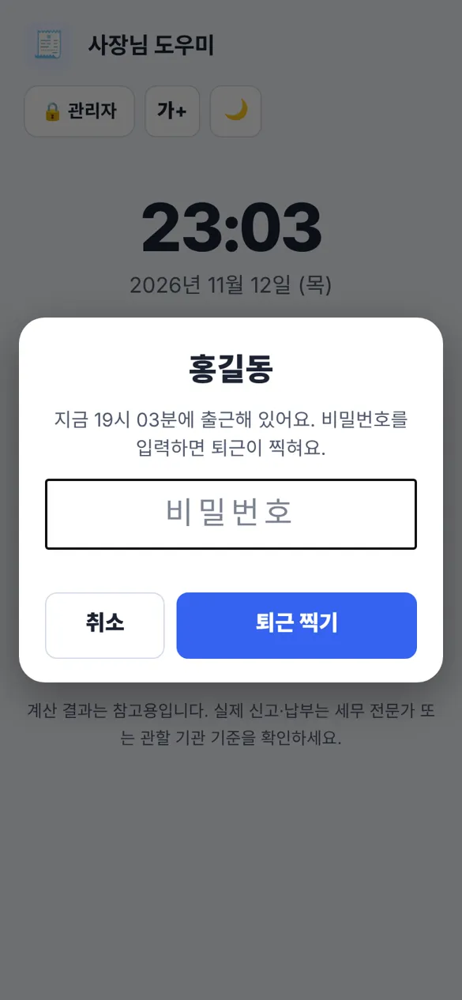
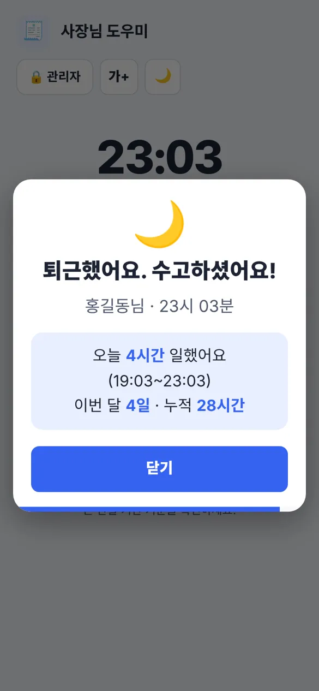
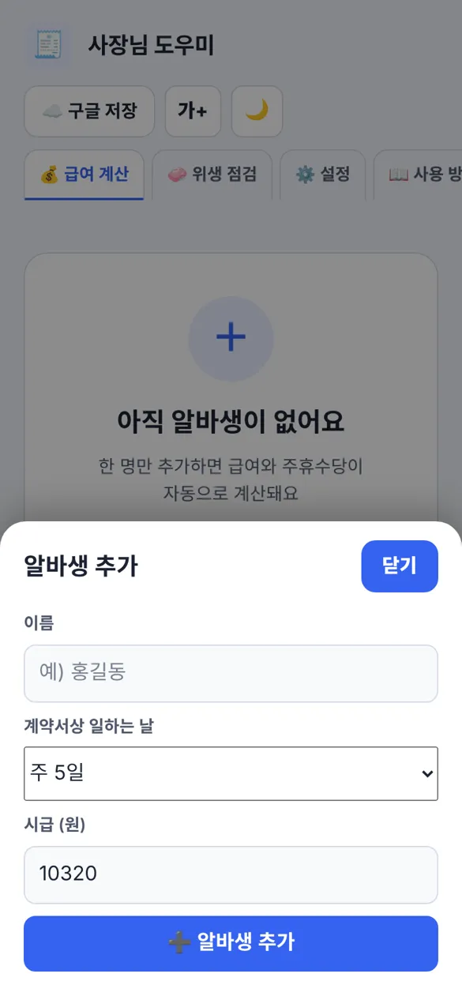
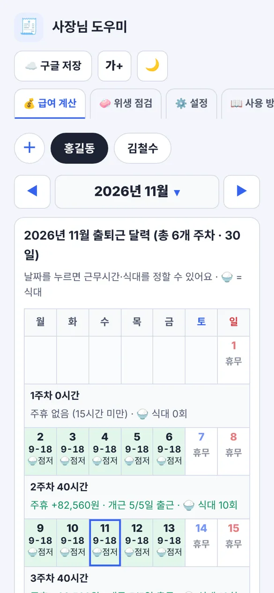
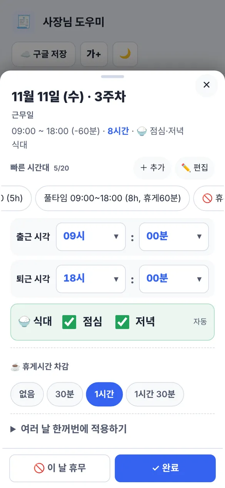
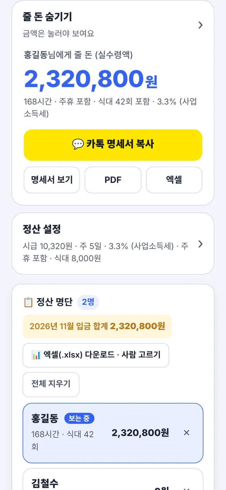
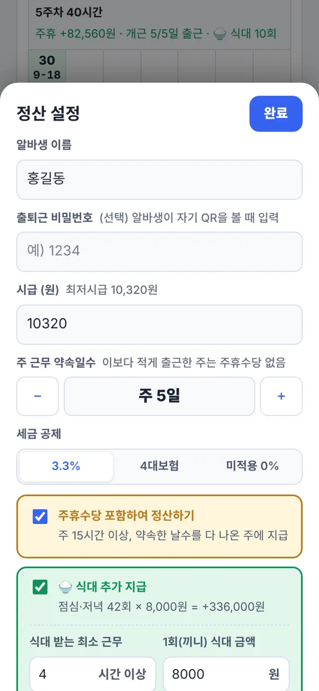
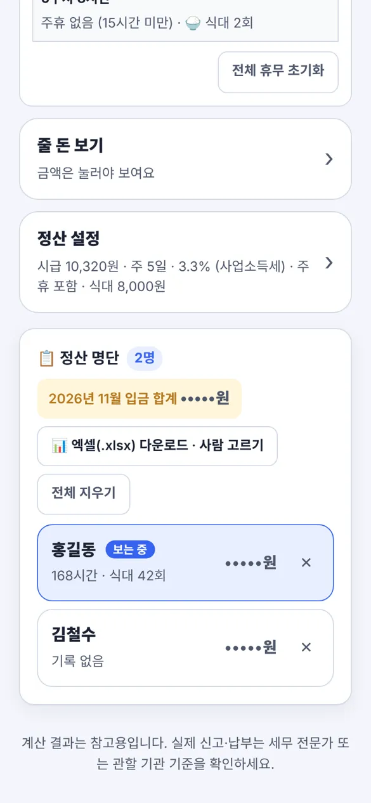
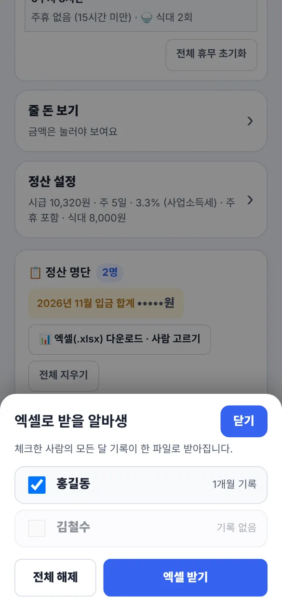

내 이름을 누르고 비밀번호를 입력하세요
아직 알바생이 없어요
한 명만 추가하면 급여와 주휴수당이
자동으로 계산돼요
2026년 11월 출퇴근 달력 (총 5개 주차)
날짜를 누르면 근무시간·식대를 정할 수 있어요 · 🍚 = 식대| 월 | 화 | 수 | 목 | 금 | 토 | 일 |
|---|
급여명세서
| 성명 | - | 지급월 | - |
|---|---|---|---|
| 시급 | - | 총 근무시간 | - |
| 주휴 / 식대 | - | 세금 방식 | - |
| 구분 | 항목 | 금액 | 산출식 (계산 방법) |
|---|
위 금액을 정히 지급합니다. 사업주 : ____________ (인)
📋 정산 명단 0명
이름을 누르면 그 알바생의 근무 기록이 위 달력에 나타납니다. 고치면 바로 저장됩니다.
| # | 성명 | 지급월 | 근무 | 시급 | 주휴수당 | 식대 | 세전총액 | 공제 | 실수령액 |
|---|
계산 중…
0/41매장 위생 점검표
위생 점검 41개 항목| 매장명 | - | 점검일자 | - |
|---|---|---|---|
| 점검자 | - | 종합 결과 | - |
| 냉장 온도 | - | 냉동 온도 | - |
| 분류 | No | 점검 항목 | 결과 | 비고 |
|---|
-
점검자 : ________ (서명)
🗂️ 일별 위생 점검 보관함 0일
| # | 점검일자 | 매장명 | 점검자 | 냉장 | 냉동 | 적합 | 결과 | 특이사항 |
|---|
⚙️ 설정
세금·보험료 비율은 해마다 바뀔 수 있습니다. 바뀌면 여기서 고치세요. 고치는 즉시 계산에 반영됩니다.
관리자 비밀번호
잊었다면 구글 시트의 "관리자" 탭에서 확인하거나 새 값으로 고친 뒤, 잠금 창의 [비밀번호를 잊었어요]를 누르면 됩니다. (구글 저장을 켜 둔 경우)
출퇴근 시간 끊기 · 모든 기기 공통
출퇴근 알림음 · 이 기기에만 적용
화면 보호기 (번인 방지) · 이 기기에만 적용
언어 · Language
앱 정보
최저시급
식사 시간대
이 시간대에 1시간 이상 겹쳐 일하면 그 끼니 식대가 자동으로 체크됩니다. (달력에서 날짜마다 직접 고칠 수 있습니다)
3.3% 공제 (사업소득세)
4대보험 (근로자 부담분)
처음 들어 있는 값은 이 앱을 만들 때 기준이며 매년 달라질 수 있습니다. 정확한 비율은 국세청·국민연금공단·건강보험공단 안내를 확인해 주세요. 주휴수당 기준(주 15시간, 최대 40시간)은 법으로 정해진 값이라 바꾸지 않습니다.
📖 사용 방법
아래 버튼에서 내 역할과 궁금한 것을 누르면 바로 그 설명이 열립니다. 검색칸에 단어를 넣어 찾을 수도 있어요.
👤 알바생
🧑💼 사장님
찾는 내용이 없어요. 다른 말로 찾아보세요.
처음 시작하기로그인 없이 바로 · 글씨 크게 · 홈 화면에 추가
- 회원가입이나 로그인 없이 바로 쓸 수 있습니다.
- 글씨가 작으면 오른쪽 위 [가+] 버튼을 누르세요. 글자가 더 크게 보입니다.
- 화면이 눈부시면 [🌙] 버튼으로 어두운 화면으로 바꿀 수 있습니다.
- 자주 쓰신다면 휴대폰 홈 화면에 추가해 두세요. 앱처럼 한 번에 열립니다.
- 아이폰(Safari): 아래 공유 버튼 → 홈 화면에 추가
- 안드로이드(Chrome): 오른쪽 위 ⋮ 메뉴 → 홈 화면에 추가
💡 입력한 내용은 이 기기에 저장됩니다. 구글 시트에 저장하려면 [구글 시트 자동 저장], 알바생이 직접 출퇴근을 찍게 하려면 [매장 기기 준비]를 보세요.
알바생: 출퇴근 찍기이름 → 비밀번호 → 출근/퇴근
매장 기기의 ⏱️ 출퇴근 화면에서 찍습니다. 근무 중인 사람은 맨 위에 파란색으로 보입니다.
- 출퇴근 화면에서 내 이름을 누릅니다.
- 비밀번호를 입력하고 [출근 찍기](출근 중이면 [퇴근 찍기])를 누릅니다.
- 결과 창에 이번 달 일한 일수와 누적 근무시간이 나오고, 5초 뒤 자동으로 닫힙니다. 바로 닫으려면 [닫기]를 누르세요.



- 퇴근을 꼭 찍어 주세요. 안 찍으면 자동 퇴근 처리되고, 그날 근무는 사장님이 확인한 뒤에 기록됩니다.
- 비밀번호를 5번 연속 틀리면 30초 동안 막힙니다. 틀린 기록도 시트에 남습니다.
- 내 이름 옆에 "⚠️ 퇴근 확인 필요"가 보이면 사장님께 실제 퇴근 시각을 알려 주세요.
사장님: 매장 기기 준비비밀번호 · 관리자 잠금 · 구글 연동 · 화면 보호기 · 소리
매장에 두는 공용 기기(사장님 폰·태블릿)에서 알바생이 직접 출근·퇴근을 찍게 하려면 아래를 한 번만 해 두세요.
- 알바생마다 [정산 설정](컴퓨터는 왼쪽 입력칸)의 "출퇴근 비밀번호"를 정해 줍니다. 비밀번호가 없는 알바생은 출퇴근을 찍을 수 없습니다.
- ⚙️ 설정 → 관리자 비밀번호를 정합니다. 처음 직원을 추가하면 안내창이 뜨는데, 바로 정하거나 [나중에]를 눌러 나중에 정해도 됩니다. 정하면 평소에는 ⏱️ 출퇴근 화면만 보이고, 급여·위생·설정은 [🔒 관리자]를 눌러 비밀번호를 입력해야 열립니다. 아무것도 안 하면 10분 뒤 자동으로 다시 잠깁니다.
- 구글 저장을 연동해 두세요. 출퇴근 기록이 시트에 쌓이고, 기기가 바뀌어도 기록이 남습니다. 연동이 안 되어 있으면 출퇴근 화면에 붉은 경고가 보입니다.
- ⚙️ 설정 → 출퇴근 시간 끊기에서 시간 끊는 단위, 지각·조기퇴근 봐주기, 자동 퇴근 시각을 매장에 맞게 정합니다. (바로 아래 [출퇴근 시간은 어떻게 기록되나요] 참고)
- 출퇴근 화면을 계속 켜 두면 화면 보호기가 작동합니다(기본 3분). 화면이 어두워지고 시계가 천천히 움직여 번인을 줄여요. 한 번 누르면 돌아옵니다. ⚙️ 설정 → 화면 보호기에서 시간을 바꾸거나 끌 수 있습니다.
- ⚙️ 설정 → 출퇴근 알림음에서 소리 크기를 키우고, 출근과 퇴근 소리를 각각 다른 소리로 고를 수 있습니다. (매장 기기에서 정하세요)
💡 알바생 비밀번호는 시트의 "알바생" 탭에도 그대로 보입니다. 다른 곳에서 쓰는 중요한 비밀번호는 쓰지 말고 4자리 숫자처럼 간단한 것으로 정하세요.
출퇴근 시간은 어떻게 기록되나요올림·내림 · 봐주기(유예) · 합치기 · 밤 넘김 · 일괄 퇴근
출근은 올림, 퇴근은 내림으로 정한 단위(기본 30분)에 맞춰 달력에 기록되고, 급여 계산에 바로 반영됩니다.
| 찍은 시각 | 유예 없음 | 유예 5분 |
|---|---|---|
| 출근 08:59 | 09:00 | 09:00 |
| 출근 09:03 | 09:30 | 09:00 |
| 출근 09:06 | 09:30 | 09:30 |
| 퇴근 17:56 | 17:30 | 18:00 |
| 퇴근 18:10 | 18:00 | 18:00 |
- ⚙️ 설정 → 출퇴근 시간 끊기에서 단위(5·10·15·20·30·60분), 지각·조기퇴근 봐주기(유예 0·5·10·15분), 출근·퇴근 각각 찍은 그대로(분 단위)를 고를 수 있습니다. 설정 화면에 지금 설정으로 계산한 예시가 나옵니다.
- 달력에는 위 규칙으로 정한 시각이, 시트의 출퇴근기록 탭에는 실제로 찍은 시각이 그대로 남습니다.
- 같은 날 두 번 일하면(점심 후 다시 출근) 한 칸으로 합쳐지고 사이 시간은 휴게로 빠집니다. 휴게시간은 따로 넣지 않으면 0분입니다.
- 밤을 넘겨 퇴근해도(예: 18:00 출근, 01:00 퇴근) 자동 퇴근 시각 전이면 출근한 날 칸에 야간 근무로 들어갑니다.
- 마감할 때는 출퇴근 화면 아래 [🌙 근무 중인 사람 모두 퇴근]으로 한 번에 퇴근시킬 수 있습니다. 관리자 비밀번호가 있으면 비밀번호를 먼저 묻습니다.
- 설정을 바꾸면 지금부터 찍는 시각에 적용되고, 이미 기록된 시각은 그대로입니다.
퇴근을 안 찍었어요자동 퇴근 · 퇴근 확인 필요 처리
자동 퇴근 시각(기본 자정 00:00, ⚙️ 설정에서 밤 8시~새벽 6시로 변경)까지 퇴근을 안 찍은 사람은 자동으로 퇴근 처리됩니다.
- 그날 근무는 달력에 기록하지 않고 급여 계산 탭 맨 위 [⚠️ 퇴근 확인 필요]에 남습니다. 출퇴근 화면의 이름 옆에도 표시됩니다.
- 사장님이 실제 퇴근 시각을 넣고 [퇴근 기록]을 누르면 그날 칸에 기록됩니다. 밤을 넘긴 시각(예: 01:00)도 넣을 수 있습니다.
- 일하지 않았다면 [근무 없음]을 누르면 정리됩니다.
- 시트의 출퇴근기록 탭에는 "퇴근누락(확인필요)", 사장님이 처리하면 "퇴근확인"으로 남습니다.
💡 자동 퇴근 처리된 뒤에도 알바생은 평소처럼 다음 출근을 찍을 수 있습니다.
알바 급여 계산하기알바생 추가 · 달력 입력 · 줄 돈 · 명세서
💡 설명은 휴대폰 화면 기준입니다. 컴퓨터·태블릿 가로 화면은 왼쪽에 월·줄 돈·정산 설정·정산 명단, 오른쪽에 큰 달력으로 나뉘어 보이지만 하는 일은 같습니다.
① 알바생 추가하기
- 맨 위 이름 줄 왼쪽의 [＋]를 누릅니다. (처음에는 [알바생 추가하기] 버튼이 보입니다)
- 이름 · 계약서상 일하는 날 · 시급을 넣고 [알바생 추가]를 누르면 끝입니다. 알바생이 직접 출퇴근을 찍게 하려면 출퇴근 비밀번호도 함께 정해 주세요.
- 알바생이 여러 명이면 이름이 한 줄로 늘어섭니다. 손가락으로 옆으로 밀면 다음 사람이 나옵니다. 이름을 누르면 그 사람의 기록으로 바뀝니다.

② 출근·퇴근 시간 고르기
- 이름 아래 ◀ 2026년 11월 ▶로 달을 고릅니다. 가운데 글자를 누르면 원하는 달로 바로 갑니다.
- 달력에서 날짜를 누르면 설정 창이 뜹니다.
- 위쪽 빠른 시간대(예: 풀타임 09:00~18:00)를 누르면 시간이 한 번에 들어갑니다. 옆으로 밀면 더 나옵니다. 쉬는 날은 [휴무]를 누르세요.
- 직접 고르려면 출근·퇴근의 시/분을 누릅니다. 식대는 점심·저녁 체크로 고치고, 끝나면 [✓ 완료]를 누릅니다.
- 매일 같다면 창 아래 [여러 날 한꺼번에 적용하기]에서 평일·주말·같은 요일에 한 번에 넣을 수 있습니다.
- 자주 쓰는 근무시간은 [＋ 추가]로 직접 만들 수 있습니다. (최대 20개)


③ 줄 돈 확인하기
- 달력 아래 [줄 돈 보기]를 누르면 "○○님에게 줄 돈"(실수령액)이 나옵니다. 다른 사람이 화면을 볼 수 있어서 금액은 평소에 숨겨져 있습니다. 다시 누르면 숨겨집니다.
- [카톡 명세서 복사] 후 카카오톡에 붙여넣으면 알바생에게 바로 보낼 수 있습니다.
- [명세서 보기]로 항목별 계산 내용을, [PDF]·[엑셀]로 파일을 만들 수 있습니다.

④ 시급·세금 등 바꾸기
- 달력 아래 [정산 설정] 줄을 누르면 설정 창이 올라옵니다.
- 이름 · 시급 · 주 근무 약속일수 · 세금(3.3% / 4대보험 / 미적용) · 주휴수당 · 식대를 여기서 고치고 [완료]를 누릅니다. 고치는 즉시 저장됩니다.
- 출퇴근 비밀번호는 알바생이 매장 기기에서 출근·퇴근을 찍을 때 입력하는 번호입니다. 직접 입력하는 방식으로 쓰지 않는다면 비워 두셔도 됩니다.

주휴수당과 식대 계산15시간 · 약속한 날수 · 식대는 실비
주휴수당
- 그 주에 15시간 이상 일했고, 약속한 날수를 다 나온 주에만 줍니다.
- 예) 주 5일 약속인데 4일만 나왔다면 그 주는 주휴수당이 없습니다.
- 공휴일 등 사정이 있어 그 주도 주고 싶다면, 달력의 주차 줄(예: "2주차 40시간")에 나오는 [이 주는 주휴 지급] 버튼을 누르세요. (다시 빼려면 [다시 제외하기])
- 달의 처음·끝에 걸친 주(그 달 날짜가 7일 미만)는 출근일수를 따지지 않습니다.
- 주휴수당을 안 주는 곳이면 [주휴수당 포함하여 정산하기] 체크를 끄세요.
식대
- 하루 기준 시간(기본 4시간) 이상 일하면 식대가 붙습니다. 근무 시간이 점심(기본 11~14시)·저녁(기본 17~20시) 시간대와 1시간 이상 겹치면 그 끼니가 자동 체크되고, 풀타임이면 점심·저녁 2회가 됩니다.
- 달력에서 날짜를 누르면 나오는 점심 / 저녁 체크박스로 직접 빼거나 더할 수 있습니다. 시간대·기준 시간·1회 금액은 ⚙️ 설정과 식대 박스에서 바꿀 수 있어요.
- 식대는 실비로 보아 세금·보험료 계산에서 빠집니다. 3.3%나 4대보험은 식대를 뺀 금액에만 붙고, 실수령액에는 식대가 그대로 더해집니다.
여러 명 · 달마다 기록 · 엑셀정산 명단 · 사람 골라 엑셀 받기
- 알바생은 맨 위 [＋]로 추가하고, 이름을 눌러 바꿔 가며 봅니다. 근무 기록은 고치는 즉시 자동 저장됩니다.
- 위쪽 달을 바꾸면 그 달의 기록이 나옵니다. 기록이 없는 달은 비어 있습니다.
- 시급을 바꾸면 바꾼 달부터 적용되고, 지난 달 기록은 그대로입니다.
- 맨 아래 정산 명단에는 알바생이 한 줄씩 카드로 나옵니다. 근무시간과 식대 횟수, 금액이 보이고(금액은 [줄 돈 보기]를 눌러야 보임), 카드를 누르면 그 사람 기록으로 바뀌고, 오른쪽 ✕를 누르면 삭제합니다.
- [엑셀(.xlsx) 다운로드 · 사람 고르기]를 누르면 알바생 목록이 뜹니다. 받고 싶은 사람만 체크하고 [엑셀 받기]를 누르면, 체크한 사람의 모든 달 기록이 한 파일로 받아집니다. [알바생 본인용]에 체크하면 급여 금액·시급·세금 없이 출근일자·근무시간·식대 횟수만 담긴 파일이 만들어져 알바생에게 그대로 줄 수 있습니다. 한 명만 체크하면 파일 이름에 그 사람 이름이 들어갑니다.


위생 점검하기41개 항목 · 보관함 · PDF·엑셀
- 위쪽 [🧼 위생 점검] 탭을 누릅니다.
- 매장명, 점검일자, 점검자를 적고 냉장·냉동 온도를 입력합니다.
- 점검 항목 41개 중 문제없는 항목만 눌러서 체크하세요. 체크하지 않은 항목은 "점검필요"로 표시됩니다.
- 전부 괜찮다면 [✅ 전체 적합으로 체크]를 누르면 됩니다.
- 특이사항이 있으면 메모에 적습니다.
- [🗂️ 보관함에 저장]을 누르면 그날 점검표가 저장됩니다. 매일 저장해 두면 기록이 쌓입니다.
- [🖨️ 점검표 PDF 출력/저장], [📊 엑셀 다운로드]로 점검표를 파일로 만들 수 있습니다.
💡 20번 항목(냉장·냉동고 온도)은 체크해도, 입력한 온도가 기준(냉장 0~5°C, 냉동 -18°C 이하)을 벗어나면 점검필요로 나옵니다.
구글 시트 자동 저장연동 · 자동 저장 · 다시 연결
휴대폰을 바꾸거나 다른 컴퓨터에서 열어도 같은 기록을 보고 싶을 때 쓰세요. 내 구글 드라이브에 자동으로 저장됩니다.
연동하기
- 화면 위쪽 [☁️ 구글 저장] 버튼을 누릅니다.
- [구글 계정으로 연동하기]를 누릅니다.
- 구글 로그인 창에서 내 구글 계정을 고르고, 허용을 눌러 주세요.
- 끝입니다. 위쪽 버튼이 "☁️ 저장됨"으로 바뀌면 연동된 것입니다.
그 다음부터
- 근무 기록이나 점검 기록을 바꾸면 몇 초 뒤 자동으로 저장됩니다.
- 시트에는 달마다 탭(예: 2026-11)이 만들어지고, 5년이 지난 달의 탭은 시트에서만 자동으로 정리됩니다. 이 기기의 기록은 지워지지 않습니다. 시트에서 직접 고친 내용은 앱에 반영되지 않습니다.
- 내 구글 드라이브에 "사장님 도우미 데이터" 파일이 생깁니다. [구글 시트 열어보기]로 볼 수 있습니다. ("데이터" 탭은 앱이 쓰는 곳이니 고치지 마세요)
- 다른 기기에서도 같은 구글 계정으로 연동하면 같은 기록이 나옵니다.
- 이 앱은 이 앱이 만든 파일만 볼 수 있고, 저장된 내용은 개발자도 볼 수 없습니다.
버튼이 "⚠️ 다시 연결"로 바뀌었어요
- 구글 로그인은 약 1시간마다 갱신이 필요합니다. 화면을 누를 때 자동으로 조용히 갱신되므로 대부분은 그대로 이어집니다. 잠깐 작은 창이 깜빡일 수 있어요.
- 그래도 풀렸다면 그 버튼을 누르고 [다시 연결하고 저장하기]를 누르세요. 그동안 바꾼 내용과 출퇴근 기록은 이 기기에 남아 있다가 저장됩니다.
- 출퇴근 화면 아래에 "시트에 아직 안 올라간 출퇴근 N건"이 보이면, 연결이 돌아오는 대로 올라갑니다.
💡 두 기기에서 동시에 고치면 마지막에 저장한 내용이 남습니다. 한 번에 한 기기에서 작업하는 것이 안전합니다.
백업 · 새 휴대폰으로 옮기기백업 파일 받기 · 불러오기
- 옮기기 전, [☁️ 구글 저장] 창 아래의 [⬇️ 백업 파일 내려받기]를 누릅니다. 기록 전체가 파일 하나로 저장됩니다.
- 새 기기(또는 새 계정)에서 이 사이트를 열고 같은 창의 [⬆️ 백업 파일 불러오기]를 누른 뒤 그 파일을 고릅니다.
- 확인 창에서 [확인]을 누르면 기록이 그대로 복원됩니다.
- 구글 연동 중이면 복원한 내용이 구글 시트에도 자동 저장됩니다.
💡 구글 연동을 쓰지 않더라도 가끔 백업 파일을 받아 두면 안심입니다.
자주 묻는 질문세금 비율 · 기록이 사라짐 · 비밀번호를 잊음
세금이나 4대보험 비율이 바뀌었어요.
위쪽 ⚙️ 설정 탭에서 소득세·국민연금·건강보험 등의 비율과 최저시급을 고치면 바로 계산에 반영됩니다. 처음 값으로 되돌릴 수도 있습니다.
기록이 사라졌어요.
기록은 사용 중인 브라우저에 저장됩니다. 브라우저의 "인터넷 사용 기록/사이트 데이터 삭제"를 하면 같이 지워집니다. 구글 연동이나 백업 파일이 있다면 [☁️ 구글 저장] 창에서 불러오세요.
가게 공용 컴퓨터에서 써도 되나요?
쓰고 난 뒤 정산 명단의 [전체 지우기]와 점검 보관함의 [비우기]를 눌러 주세요. 다음 사람이 같은 브라우저에서 알바 이름과 시급을 볼 수 있습니다.
내가 입력한 급여 정보가 어디로 전송되나요?
기본적으로 어디로도 전송되지 않고 이 기기에서만 계산됩니다. 구글 연동을 켠 경우에만 내 구글 드라이브로 저장됩니다.
계산 결과를 그대로 신고해도 되나요?
결과는 참고용입니다. 실제 신고·납부는 세무 전문가나 관할 기관의 기준을 확인하세요.
관리자 비밀번호를 잊었어요.
구글 저장을 켜 두었다면 구글 시트의 관리자 탭 오른쪽 칸(B1)에 비밀번호가 적혀 있습니다. 그 칸을 새 비밀번호로 고친 뒤 잠금 창에서 [비밀번호를 잊었어요]를 누르면 적용됩니다. 구글 저장도 백업도 없다면 열 방법이 없으니 꼭 해 두세요.
알바생이 출퇴근을 잘못 찍었어요.
급여 계산 탭 달력에서 그 날을 눌러 시간을 고치면 됩니다. 시트의 출퇴근기록 탭에는 실제로 찍은 시각이 그대로 남아 있어 나중에 확인할 수 있습니다.